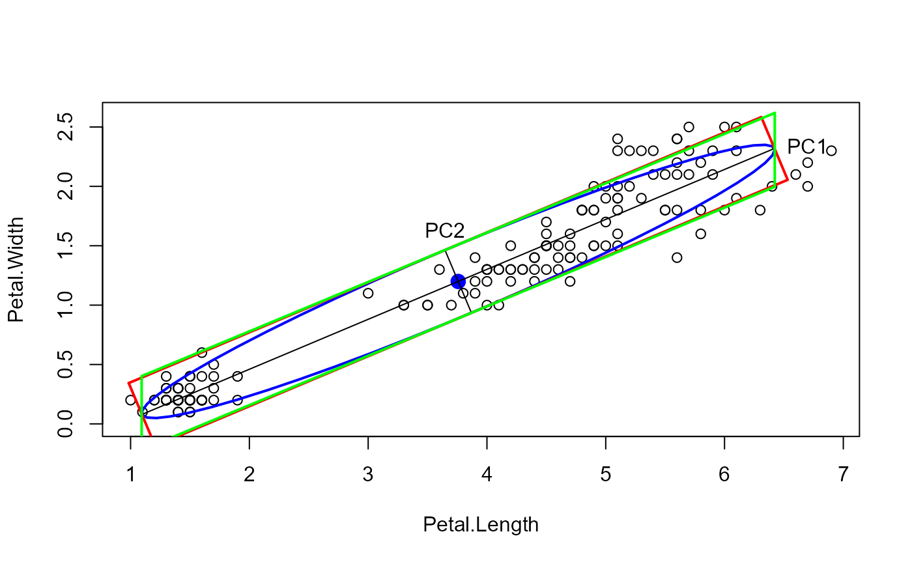

Draw Conjugate Axes and Parallelogram Surrounding a Covariance Ellipse
Source:R/ellipse.box.R
ellipse.box.RdDraw Conjugate Axes and Parallelogram Surrounding a Covariance Ellipse
Arguments
- x
A square positive definite matrix at least 2x2 in size. It will be treated as the correlation or covariance of a multivariate normal distribution.
- center
The center of the ellipse
- which
An integer vector to select which variables from the object
xwill be plotted. The default is the first 2.- level
The coverage level of a simultaneous region of the ellipse. The default is 0.95, for a 95% region. This is used to control the size of the ellipse.
- radius
The size of the ellipsoid may also be controlled by specifying the value of a t-statistic on its boundary. This defaults to the square root of a chi-square statistic for a given
levelon 2 degrees of freedom, however in a small sample ofnobservations, a more accurate value issqrt(2 * qf(level, 2, n - 1 )).- factor
A function defining the conjugate axes used to transform the unit circle into an ellipse.
chol, uses the right Cholesky factor ofx.- draw
What to draw?
"box","diameters"or"both"- ...
Other arguments passed to
lines.
Examples
data(iris)
cov <- cov(iris[,3:4])
mu <- colMeans(iris[,3:4])
radius <- sqrt(qchisq(0.68, 2))
plot(iris[,3:4], asp=1)
car::ellipse(mu, cov, radius = radius)
ellipse.axes(cov, center=mu, level = 0.68,
labels = TRUE)
ellipse.box(cov, center=mu, level = 0.68,
factor = "pca",
col = "red", lwd = 2 )
res <- ellipse.box(cov, center=mu, level = 0.68, factor = "chol", col = "green", lwd = 2 )

res
#> Petal.Length Petal.Width
#> [1,] 6.42288 2.6179312
#> [2,] 1.09312 0.4020543
#> [3,] 1.09312 -0.2192645
#> [4,] 6.42288 1.9966124
#> [5,] 6.42288 2.6179312